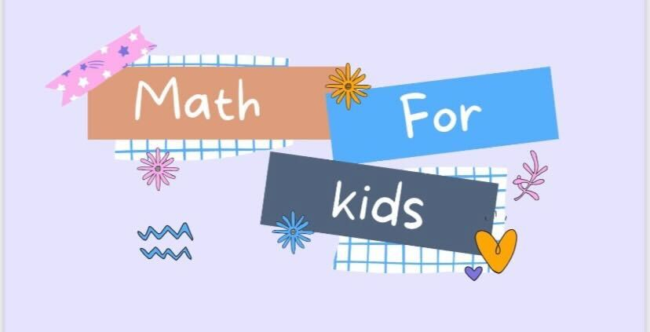
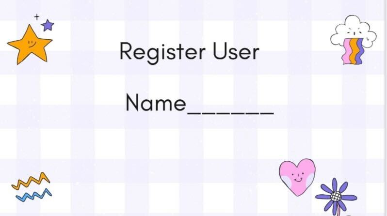
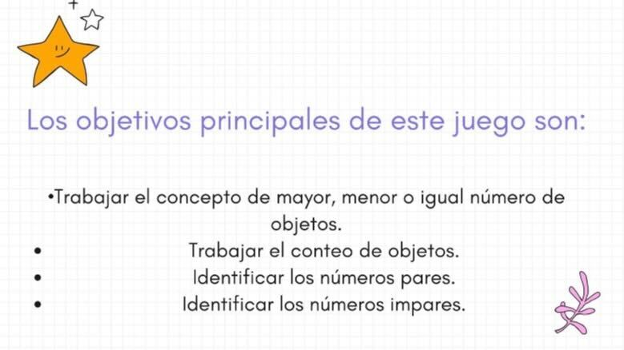
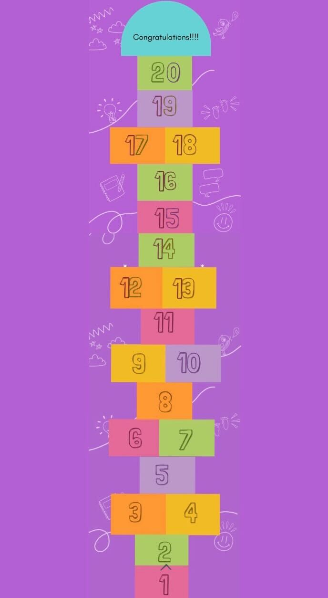
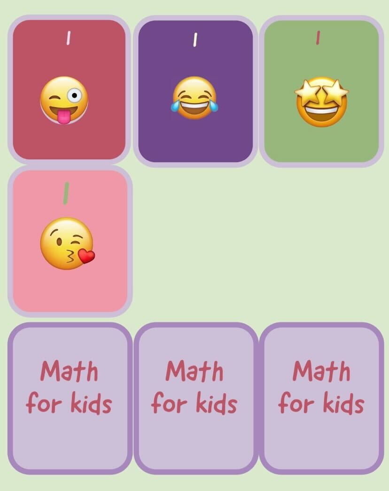

MathsForKids
Login
Bienvenidos
Edad recomendada: Este juego educativo gratis, esta diseñado para aquellos que les interesa reforzar contenidos: operaciones numericas.
Instrucciones del juego:
El usuario selecciona una carta parandose en la baraja. Si un numero es par(2,4,6,8,10,12.14,16,18,20)comienza el juego.
En caso contrario, si el numero es impar(1,3,5,7,9,11,13,15,17,19), el usuario debera volver a sacar una carta del mazo.
Una vez comenzado el juego, si el usuario saca un numero par, avanzara tantas casillas segun la carta.
Por el contrario si obtiene un numero impar, retrocede el numero de casillas que le indica la carta.
El juego repetira el procedimiento anterior hasta que llegue al objetivo. (¡Congratulations!)




